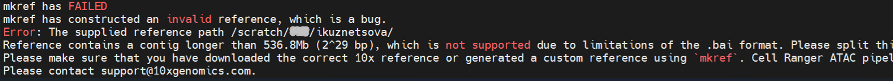

scShardSplitRef
scShardSplitRef designed for researchers working with multiome single-cell data from species that require building a custom reference genome, particularly when one or more chromosomes/contigs in the reference FASTA exceed the Cell Ranger ARC limit of 536.8Mb (2^29 bases). scShardSplitRef enables splitting of long chromosomes/contigs generating shorter fragments that are compatible with Cell Ranger ARC requirements. The scShardSplitRef package outputs GTF file containing the split chromosomes/contigs, which can be directly processed by cellranger-arc mkref. We also provide guidance on how to split a FASTA file used by cellranger-arc mkref using bedtools.
To familiarise yourself with the package and the workflow for preparing reference genome sequence (FASTA) and gene annotation (GTF) files for Cell Ranger ARC, we suggest starting with the algorithm description and a guided walk through.
Available on CRAN: scShardSplitRef
Problem Overview
Cell Ranger provides pre-built reference genomes for common species such as human and mouse. For less common species, users must build a custom reference. For example, for multiome ATAC + Gene Expression sequencing data, the command is cellranger-arc mkref that requires a genome sequence (FASTA) and gene annotation (GTF) files. When working with species that have very large chromosomes or scaffolds, users may encounter the following error:
>Due to limitations of the BAM index format, a contig in the reference FASTA file cannot exceed 536.8 Mb (2^29 bases). If a contig exceeds that size you will have to split it into smaller contigs and make corresponding modifications to the GTF file. Source: 10x Genomics Documentation

screenshot of the error
For example, the barley genome has several chromosomes (2H = 665.59 Mb, 3H = 621.52 Mb, 4H = 610.33 Mb, 5H = 588.22 Mb, 6H = 561.79 Mb, 7H = 632.54 Mb) that exceed this size limit. As a result, cellranger-arc mkref cannot build a reference unless the oversized chromosomes are divided into smaller fragments.
scShardSplitRef
Prerequisites
| Software | Version | Purpose |
|---|---|---|
| bedtools | ≥ 2.30 | BED file operations |
| Cell Ranger ARC | ≥ 2.0 | Single-cell multiome processing |
Installation
library("scShardSplitRef")
library("knitr") # used for a kable table later in the documentInput Files
| File | Format | Description | Comment |
|---|---|---|---|
| Gene annotations | GTF | Gene features and coordinates | Morex v3, subset to 2 chromosomes |
| Centromere coordinates | BED-like | Centromere positions per chromosome (x1) | 2 chromosomes |
| Genome sequence | FASTA | Reference genome sequence | (x2) Not bundled; used for Cell Ranger demo only; download from Ensembl |
(x1) Note1: If centromere coordinates are not available for your species, the second column of the BED-like file should be set to
0. If centromere coordinates are available, the second column should be set to the centromere coordinate. {scShardSplitRef} will then check for any overlaps with genic regions and generate the correct GTF file that is compatible withcellranger-arc mkref.(x2) Note2: Please note that the FASTA file is not required for the package, but is used to demonstrate FASTA preparation for the Cell Ranger ARC command in the workflow description. It is not included in the repository due to the large file size; download from Ensembl.
What does a GTF file for MOREX V3 look like?
# Gene annotations (GTF) file:
gtf_df <- read.table(
file = "morex3_subset_1H_2H.gtf",
header = FALSE,
sep = "\t"
)
dim(gtf_df) ### 150638 x 9
gtf_df[1:10, ]The format of the GTF file (morex3_subset_1H_2H.gtf) is a tab-delimited 9-column file.
2H IPK gene 601169528 601171444 . - . gene_id "HORVU.MOREX.r3.2HG0191020"; gene_source "IPK"; gene_biotype "protein_coding";
2H IPK transcript 601169528 601171444 . - . gene_id "HORVU.MOREX.r3.2HG0191020"; transcript_id "HORVU.MOREX.r3.2HG0191020.1"; gene_source "IPK"; gene_biotype "protein_coding"; transcript_source "IPK"; transcript_biotype "protein_coding"; tag "Ensembl_canonical";
2H IPK exon 601169754 601171444 . - . gene_id "HORVU.MOREX.r3.2HG0191020"; transcript_id "HORVU.MOREX.r3.2HG0191020.1"; exon_number "1"; gene_source "IPK"; gene_biotype "protein_coding"; transcript_source "IPK"; transcript_biotype "protein_coding"; exon_id "HORVU.MOREX.r3.2HG0191020.1-E1"; tag "Ensembl_canonical";
2H IPK CDS 601169754 601171444 . - 0 gene_id "HORVU.MOREX.r3.2HG0191020"; transcript_id "HORVU.MOREX.r3.2HG0191020.1"; exon_number "1"; gene_source "IPK"; gene_biotype "protein_coding"; transcript_source "IPK"; transcript_biotype "protein_coding"; protein_id "HORVU.MOREX.r3.2HG0191020.1"; tag "Ensembl_canonical";
2H IPK start_codon 601171442 601171444 . - 0 gene_id "HORVU.MOREX.r3.2HG0191020"; transcript_id "HORVU.MOREX.r3.2HG0191020.1"; exon_number "1"; gene_source "IPK"; gene_biotype "protein_coding"; transcript_source "IPK"; transcript_biotype "protein_coding"; tag "Ensembl_canonical";What does a BED-like centromere file for MOREX V3 look like?
{r} # Manually formatted BED-like file: centr_bed_df <- read.table( file = "morex3_subset_1H_2H.bed", header = FALSE, sep = "\t" ) dim(centr_bed_df) ## 2 x 3 centr_bed_df[1:2, ] The format of the centromere coordinates file is a tab-delimited 3-column file, where the 1st column contains chromosome/contig names, the 2nd column contains the centromere coordinate or if not available ‘0’, and the 3rd column contains chromosome/contig region end coordinates.
1H 206486643 516505932 # <- The second column is `206486643` - the centromere coordinate obtained from the database
2H 301293086 665585731Usage Guide
A step-by-step guide can be found in the vignettes: - Toy example (algorithm): a quick introduction to understand the split algorithm vignette toy - Real-world example: subset barley vignette quickstart - Real-world example: barley (Hordeum vulgare), wheat (Triticum aestivum) and faba bean (Vicia faba) the Tutorials.zip folder on the vignettes branch
Note on parameter selection in determine_split_regions(). In real world scenarios users should consider picking
clearance = 900 (2 x 150 bp reads with up to a 600 bp insert size), andshift_by in the region of 1000 to 4000to ensure the algorithm can easily walk through a whole gene if needed.
Citation
Please cite this tool if you use it
library("scShardSplitRef")
citation("scShardSplitRef")
#> Warning in citation("scShardSplitRef"): could not determine year for 'scShardSplitRef'
#> from package DESCRIPTION file
#> To cite package 'scShardSplitRef' in publications use:
#>
#> Kuznetsova I, Pembleton L, Curci L, Sparks A (????). _scShardSplitRef: gene-aware sharding of large chromosomes._. R package version 0.1.0
#>
#> A BibTeX entry for LaTeX users is
#>
#> @Manual{,
#> title = {scShardSplitRef: Build Custom Reference Genome for Single-Cell Multiome ATAC and
#> Gene Expression Data of Large-Genome Species.},
#> author = {Irina Kuznetsova and Luke Pembleton and Luca Curci and Adam H. Sparks},
#> note = {R package version 0.1.0},
#> }Contributing
Code of Conduct
Please note that the scShardSplitRef project is released with a Contributor Code of Conduct. By contributing to this project, you agree to abide by its terms. If you’d like to help improve this tool, please send your suggestions via email. Please clearly outline the feature(s) you think should be added. As the tool develops, new features can be added as separate package functions and contributed back to the project. Remember that improving tools is important, but keeping them neat and not over-complicated is just as essential.
Acknowledgements
GRDC funded this project through the Analytics for the Australian Grains Industry (AAGI) investment, CUR2210-005OPX (AAGI-CU).
This work was supported by resources provided by the Pawsey Supercomputing Research Centres; Nimbus Research Cloud, with funding from the Australian Government and the Government of Western Australia.
This research used the Australian Research Data Commons (ARDC) ARDC Nectar Research Cloud Service ARDC Nectar Research Cloud | Australian Research Data Commons. The ARDC is enabled by the Australian Government’s National Collaborative Research Infrastructure Strategy (NCRIS).